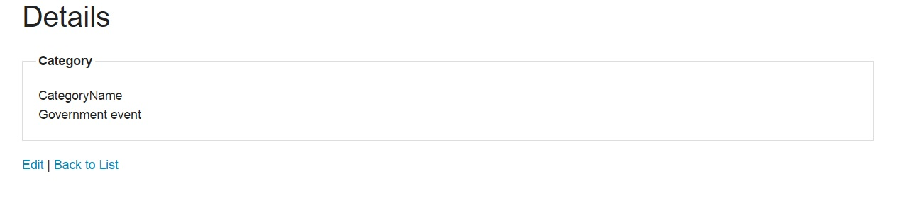

Technical Manual
1. Overview
The technical manual document outlines the technical details of architecture, design and implementation of the system. The documents presents a high level design consisting of the main functionality the program does and afterwards a detailed design is included in order to demostrate what is intended to be achieved with the implementation.
2. Architecture
The system is build using ASP.NET MVC and a SQL Express Database. The Model-View-Controller (MVC) architectural pattern separates an application into three main components: models, views and controllers. The main advantages of using an MVC pattern are:
- It makes easier to manage a complex application.
- Enables full control over the rendered HTML.
- The application follows a natural cycle: when a user takes an action, the data models changes and delivers an updated view to the user.
- ASP.NET MVC helps the developer to produce clean, standard markup using HTML helper methods.
- Given the fact that the application is separated in layers, it makes easier to test each component individually.
- Powerful routing system (more similar to RestFul). For example, instead of URLs like this:
/App_v2/User/Page.aspx?action=show%20prop&prop_id=82742uses URLs like:/to-rent/chicago/2303-silver-street.
The next diagram shows how the application is separated in layers, the comunication among components and the contents of each one.

[Image 1]. Architecture of the system.
References:
- Msdn.microsoft.com, (2014). ASP.NET MVC Overview. [online] Available at: http://msdn.microsoft.com/en-us/library/dd381412%28v=vs.108%29.aspx
- forms, B. (2014). Biggest advantage to using ASP.Net MVC vs web forms. [online] Stackoverflow.com. Available at: http://stackoverflow.com/questions/102558/biggest-advantage-to-using-asp-net-mvc-vs-web-forms
- Pro ASP.NET MVC 4 (Professional Apress) 4th. Apress Berkely, CA, USA ©2013. ISBN:1430242361 9781430242369
3. Database design
Two databases are used in the system, one is the default-system database used for users and roles; the other was designed specifically for the system. The next diagram shows the design of the databases.

Entity relationship.
The structure of the database was defined in the models (See Image 1), in order to use the Entity Framework Data Model for ASP.NET MVC, the class can be found at "/DAL/CallContext.cs", the script to generate the tables can be found at: "Migrations/201411142345057_InitialCreate.cs". CallContext.cs:
public DbSetEntity Framework - migrations.Calls { get; set; } public DbSet Employees { get; set; } public DbSet Persons { get; set; } public DbSet Categories { get; set; } static CallContext() { Database.SetInitializer (null); }
References:
- The Official Microsoft ASP.NET Site, (2014). Creating an Entity Framework Data Model. [online] Available at: http://www.asp.net/mvc/overview/older-versions/getting-started-with-ef-5-using-mvc-4/creating-an-entity-framework-data-model-for-an-asp-net-mvc-application
- The Official Microsoft ASP.NET Site, (2014). Part 4: Models and Data Access. [online] Available at: http://www.asp.net/mvc/overview/older-versions/mvc-music-store/mvc-music-store-part-4

Entity relationship.
Basically, SimpleMembershipInitializer is a class extending ActionFilterAttribute. The latter is in order to insert the code into “ASP.NET MVC execution life cycle” (Ciliberti, 275). This class contains an overriding method called OnActionExecuting and LazyInitializer.EnsureInitialized , which inside the former method, is invoked to verify and guarantee that initializeSimpleMemberShipAttribute has been executed just once per application (Ciliberti, 275).
- Database.SetInitializer
(null); this is to establish initialization scheme of a database for the UserContext class.
- context.Database.Exists() is located inside try/catch block which is to ensure the database has been created.
- WebSecurity.InitializeDatabaseConnection: it is a method is called at a start of the application. The purpose of this method as the following:
- Tests the membership database is available. In case of it isn’t available, membership tables are created.(Microsoft MSDN, 2014)
- “Opens a connection to the user profile table and establishes a database relationship between the membership data and the user profile data” (Microsoft MSDN, 2014).
Parameters of WebSecurity method are
| Parameter name | Type | Description |
|---|---|---|
| DefaultConnection | String | This refers to the connection string containing “user information”. DefaultConnection is the name of connectionstring created in WebConfig as shown in the below picture |
| UserProfile | String | Database table name involving user information |
| UserId | String | This is a column name in database containing user IDs which are defined as an Integer. |
| UserName | String | This is the column name in database containing user Names. The purpose of it is to verify “user profile data’’ matches “membership data account" |
| autoCreateTables: true | Boolean | This is in order to create a membership tables. In case of it is not exist. |
Finally, this class contains also an OnActionExecuting method which is executed each time the controller, which is associated with the initializeSimpleMemberShipAttribute, is invoked (Ciliberti, 275) SimpleMembershipInitializer .
References:
- Ciliberti J. ASP.NET MVC 4 Recipes. Apress
- Microsoft MSDN, (2014). Initialize Database connection. [online] Available at: http://msdn.microsoft.com/en-us/library/webmatrix.webdata.websecurity.initializedatabaseconnection(v=vs.111).aspx
- Youtube.com, (2014).Simple Membership in ASP NET MVC 5 Web Applications [online] Available at: https://www.youtube.com/watch?v=BsKcVbsMn6w
4. High level design
The user can perform different actions in the system. The following diagrams shows how the diagram communicates among its components when the user sends a request to the system.
The diagram from the right shows the interaction among the components when a user register on the system (show | hide).
Register.

[Image 2]. A new user registers on the system.
The diagram from the right shows the interaction among the components when a user log into the system (show | hide).
Login.
[Image 3]. A new user registers on the system.
The diagram from the right shows the interaction among the components when a user registers a call on the system (show | hide).It is assumed that the user is already logged into the system.
Call registration.

[Image 4]. A new call registration is stored on the system.
The diagram from the right shows the interaction among the components when a wants to perform a search for a person on the system (show | hide). It is assumed that the user is already logged into the system and it has access to the module.
Search.

[Image 5]. Search of a person.
The diagram from the right shows the interaction among the components when a wants to generate the charts on the system (show | hide). It is assumed that the user is already logged into the system and it has access to the module.
Charts.

[Image 6]. Charts components interaction.
5. User interface design
The system is built using the front-end framework called Foundation. The framework is designed by dividing the width of the screen in twelve columns, which can be configured for small, medium or large devices. Besides to provide a responsive design, it also offer many interface elements, some of the important elements used on the system are:
- Navigation menu. It provides the navigation on the system to access the different modules. Also, the menu respond to the size of the screen.

[Image 7]. Navigation menu, code in "/Views/Shared/_Layout.cshtml".
Besides of using the CSS from Foundation, it is required to add the following scripts in order to have a responsive design.
@Scripts.Render("~/bundles/jquery")
@Scripts.Render("~/Scripts/foundation.js")
@Scripts.Render("~/Scripts/foundation.topbar.js")
And include the next line of code inside a script, after the call to the javascript files mentioned.
$(document).foundation();
Code in "/Views/Shared/_Layout.cshtml".
- Responsive tables.

[Image 8]. Responsive tables, code in "/Views/Shared/_Layout.cshtml".
To get the responsive tables work it is required to add the javascript: @Scripts.Render("~/Scripts/responsive-tables.js") and the CSS @Styles.Render("~/Content/responsive-tables.css").
Code in "/Views/Shared/_Layout.cshtml".
The next screenshot shows how the system looks in different sizes, depending on the device (show | hide).

References:
- ZURB, i. (2014). Getting Started | Foundation Docs. [online] Foundation.zurb.com. Available at: http://foundation.zurb.com/docs/
- Ami.responsivedesign.is, (2014). Am I Responsive?. [online] Available at: http://ami.responsivedesign.is/
6. Validation
All the forms used in the system has validation to configure, to prevent the user to submit empty or wrong information. The configuration of the validation is divided in two parts:
- In the Model for each property that by design it needs to be checked. This way to do it allow us to take advantage of Razor and generate HTML in a clean and faster way.
- In the View using Razor syntax, specifiying which property of the model and indicating that its for validation
For example:
The Model Registration (code in "/Models/Registration.cs") specifies which data is required and the text for the label.
[Required(ErrorMessage = "A phone number is required")]
[Display(Name = "Phone number:")]
public int PhoneNumber { get; set; }
In the View (code in "/Views/Call/Register.cshtml") at the top of the page it specifies which Model is going to be used for the view. To retrieve or assign data from the model is as follows:
Set validation to true @Html.ValidationSummary(true) and then
@Html.LabelFor(m => m.PhoneNumber)(gets the display name: "Phone number")
@Html.TextBoxFor(m => m.PhoneNumber)(assign the value to PhoneNumber)
@Html.ValidationMessageFor(m => m.PhoneNumber)(gets the ErrorMessage: "A phone number is required")
In case the user submits the form with one or more empty fields the error message will be displayed. Same behavior when using Ajax, the system will not communicate with the server until the data is correct.

[Image 10]. Validation message.
Note: this only shows an example of how validation is configured in one of the models from the project, the models/views that have validation are:
- Model Registration.cs (code in "/Models/Registration.cs") / View: Call/Register (code in "/Views/Call/Register.cshtml").
- Model Search.cs (code in "/Models/Search.cs") / View: Person/Search (code in "/Views/Person/Search.cshtml").
- Model Chart.cs (code in "/Models/Chart.cs") / View: Account/Login, Account/Register (code in "/Views/Account/Login.cshtml", "/Views/Account/Register.cshtml").
- Model AccountModels.cs (code in "/Models/AccountModels.cs") / View: Chart/Index (code in "/Views/Chart/Index.cshtml").
7. Authorization
The user must have authorization to access the modules, by defaut it can only access to registration call. AuthorizeCore: it is an ovverriden method in order to check wheter the user is being authorized. Has two parameters:
- HtttpContext: It is for collecting an information about each single request. It returns false if the user is not authorized.
- OnAuthorization: It is an overriden method in order to redirect the user to Unauthorized page. According to (MSDN), this method is called "when a process requests authorization"
[Image 11]. Validation message.
Note: the code can be found in the controller "AuthorizeAttribute" can be found at: /controllers/AuthorizeAttribute.cs.
References:
- Msdn.microsoft.com. AuthorizeAttribute Class. [online] Available at: http://msdn.microsoft.com/en-us/library/system.web.mvc.authorizeattribute.onauthorization(v=vs.118).aspx
- stackoverflow.com. ASP.NET MVC - How to show unauthorized error on login page?. [online] Available at: http://stackoverflow.com/questions/1498727/asp-net-mvc-how-to-show-unauthorized-error-on-login-page
8. Implementation
An explanation and features of each module from the system are going to be presented in this section.
8.1 Register
In case that the information has been entered correctly, the data will be stored in database by a WebSecurity.CreateUserAndAccount(model.UserName, model.Password) method and direct the user to Registration Page for call. Another important elements are:
- [AllowAnnonymous]: It is an attribute determinig the controllers and actions "are skipped by AuthorizeAttribute during authorization" (Microsofr MSDN 1).
- [ValidateAntiForgeryToken]: It is an attribute used to "prevent forgery of a request" (Microsofr MSDN 2)
- ModelState.IsValid: ModelSate "represents the state of an attempt to bind a poster form to an action method, which includes validation information. Where isValid gets a value determining if instance of this model-stat dictiornary is valid" (Microsofr MSDN 3). For example, passing a string for a parameter which should be an integer.
[Image 12]. Registration Code.
Note: the code can be found in the controller "AccountController" can be found at: /controllers/AccountController.cs, the model "AccountModels.cs" found at /Models/AccountModels and the view "register.cshtml" found at: /Views/Account/register.cshtml.
References:
- Microsoft MSDN 1. System.Web.Http [online] Available at: http://msdn.microsoft.com/en-us/library/system.web.http.allowanonymousattribute%28v=vs.118%29.aspx
- Microsoft MSDN 2. System.Web.MVC [online] Available at: http://msdn.microsoft.com/en-us/library/system.web.mvc.validateantiforgerytokenattribute%28v=vs.118%29.aspx
- Microsoft MSDN 3. Model State Class [online] Available at: http://msdn.microsoft.com/en-us/library/system.web.mvc.modelstate%28v=vs.118%29.aspx
8.2 Login
In case username and password have been entered, the data will be matched with database records by a WebSecurity.Login(model.UserName, model.Password, persistCookie: model.RememberMe) method and redirect a user to Registration Page for call. Another important elements are:
[Image 13]. Login Code.
8.3 Register a call
The main flow of actions for this module can be found in the diagram Call Registration. The main features of this component are: Validation (see section Validation for more information); Ajax communication to retrieve information given a phone number, in order to fill fields automatically and create historic table; create a new entry in the database.
Besides ASP.NET MVC the technologies used are: Jquery, Ajax, JSON.
7.3.1 Register a call - submit - Ajax/Json
The component was designed to communicate with the database via AJAX with the objective to provide fast and dynamic information to the employee, without the need to refresh the web page or go to another component.
After the user submits the form the first action from the system is to validate the fields, if all the fields are correct the data is going to be serialize in JSON format and send to the controller, the class that executes this action is Registration.js (code in "/Scripts/Custom/registration.js"), as shown below:
if ($("form").valid()) {
// Disable the button
$('input[type="submit"]').prop('disabled', true);
$.ajax({
type: "POST",
url: form.attr('action'),
dataType: 'json',
ContentType: 'application/json',
data: $("form").serialize()
})
...
1. First step, data serialize and send to controller.
if (data === true) {
$('input[type="submit"]').prop('disabled', false);
$('div#messages').attr('class', 'alert-box success radius');
$('div#messages').show();
$('div#messages').text("The information of the call has been successfully saved").fadeOut(4000);
// Clean the fields of the form to leave them ready the form for the next call.
$('input#PhoneNumber').val('');
...
}
...
3. Third step, the javascript receives the data from the controller and displays the message.
[HttpPost]
public JsonResult Register(Models.Registration registration)
...
if (ModelState.IsValid)
{
...
var aux = (from ca in db.Categories
where ca.CategoryName.Equals(registration.Categories)
select ca).Single();
Person person = new Person(registration.PhoneNumber, registration.Name, registration.LastName, registration.Address1, registration.Address2, registration.PostCode);
// Check if a person already exists on the table with that phone number.
var checkPerson = db.Persons.Any(p => p.PhoneNumber == person.PhoneNumber);
var userName = WebSecurity.CurrentUserName;
var checkEmployee = db.Employees.Any(e => e.Name == userName);
Employee tmpEmployee = null;
if(checkEmployee)
tmpEmployee = db.Employees.Single(e => e.Name == userName);
if (checkPerson && checkEmployee)
{
Person tmpPerson = db.Persons.Single(p => p.PhoneNumber == person.PhoneNumber)
if (TryUpdateModel(tmpPerson, new string[] { "Name", "LastName", "Address1", "Address2", "PostCode" }))
{
...
db.Entry(tmpPerson).State = EntityState.Modified;
db.SaveChanges();
Call call = new Call(aux.CategoryId, tmpEmployee.EmployeeId, registration.Program, registration.Comments, registration.Positive, tmpPerson);
db.Calls.Add(call);
db.SaveChanges();
...
}
}
else
{
Call call = new Call(aux.CategoryId, tmpEmployee.EmployeeId, registration.Program, registration.Comments, registration.Positive, person);
db.Calls.Add(call);
db.SaveChanges();
}
return Json(true);
...
}
return Json(false);
2. Second step, response in JSON format from the controller.
7.3.2 Register a call - phone number typed - Ajax/Json
After a user type the phone number, the .js file will read the value and communicate with the controller to retrieve information about the person.
...
$.ajax({
type: 'POST',
url: '/Call/Complete',
data: { phoneNumber: phoneNumber },
dataType: "json",
ContentType: 'application/json'
})
...
1. First step, get phone number value and communicate with the controller.
...
.success(function (data) {
if (data !== false) {
// Clean error messages from the screen and append the span back to be able to show future error messages.
$('span[data-valmsg-for="PhoneNumber"]').remove();
$('#errorPhoneNumber').append("");
$('input#Name').val(data.Name);
$('span[data-valmsg-for="Name"]').remove();
$('#errorName').append("");
$('input#LastName').val(data.LastName);
...
3. Third step, fill in the fields.
[HttpPost]
public JsonResult Complete(Models.Registration registration)
{
var aux = db.Persons.Any(p => p.PhoneNumber == registration.PhoneNumber);
if (aux)
{
Person tmpPerson = db.Persons.Single(p => p.PhoneNumber == registration.PhoneNumber);
registration.Name = tmpPerson.Name;
registration.LastName = tmpPerson.LastName;
registration.Address1 = tmpPerson.Address1;
registration.Address2 = tmpPerson.Address2;
registration.PostCode = tmpPerson.PostCode;
return Json(registration);
}
return Json(false);
}
2. Second step, the controller modifies the received model.
7.3.3 Register a call - historical data - Ajax/Json
After a user type the phone number, the .js file will read the value and communicate with the controller to retrieve information about the historical data of the person.
...
$.ajax({
type: 'POST',
url: '/Call/Historical',
data: { phoneNumber: phoneNumber },
dataType: "json",
ContentType: 'application/json'
})
...
1. First step, get phone number value and communicate with the controller.
...
var aux = db.Persons.Any(p => p.PhoneNumber == registration.PhoneNumber);
if (aux)
{
Person tmpPerson = db.Persons.Single(p => p.PhoneNumber == registration.PhoneNumber);
var bCalls = db.Calls.Any(c => c.Person.PersonId == tmpPerson.PersonId);
if (bCalls)
{
var calls = (from ca in db.Calls
join a in db.Categories on ca.CategoryId equals a.CategoryId
where ca.Person.PersonId == tmpPerson.PersonId
orderby ca.TimeCall descending
select new {ca.Program, a.CategoryName, ca.Comments, ca.Positive, ca.TimeCall});
List lCall = new List();
int cPositive = 0;
int cNegative = 0;
foreach (var c in calls)
{
Historic call = new Historic(c.Program, c.CategoryName, c.Comments, c.Positive, c.TimeCall.ToString());
if (c.Positive)
cPositive++;
else
cNegative++;
lCall.Add(call);
}
return Json(new { Name = tmpPerson.Name, LastName = tmpPerson.LastName, Address1 = tmpPerson.Address1, Address2 = tmpPerson.Address2, PostCode = tmpPerson.PostCode, nPositive = cPositive, nNegative = cNegative, Calls = lCall });
}
else
return Json(false);
...
2. Second step, the controller modifies the received model.
...
// Check if the number of positive comments are equal to the number of negative comments
if (data.nPositive === data.nNegative) {
$('div#messages').attr('class', 'alert-box info round');
$('div#messages').show();
$('div#messages').text("The user has the same number of positive and negative comments").fadeOut(3000);
}
else if (data.nPositive > data.nNegative) {
// Notify if the user has a good reputation (more positive comments than negative)
$('div#messages').attr('class', 'alert-box info round');
$('div#messages').show();
$('div#messages').text("The user has a reputation of positive comments").fadeOut(3000);
}
else {
// Notify if the user has a bad reputation when calling (more negative comments than positive)
$('div#messages').attr('class', 'alert-box warning round');
$('div#messages').show();
$('div#messages').text("The user has a reputation of negative comments").fadeOut(3000);
...
3. Third step part 1, show message regard the reputation.

4. Third step part 2, historical data.
Note: the javascript file "Registration.js" can be found at /Scripts/Custom/registration.js, the controller "CallController" can be found at: /controllers/CallController.cs, model used "Registration" found at: /Models/Registration.cs, View used "Register.cshtml" found at: /Views/Call/Register.cshtml
8.4 Search a person
The main flow of actions for this module can be found in the diagram Search person. The main features of this component are: Validation (see section Validation for more information); Ajax communication to retrieve information given a a name or phone number, in order to create a table with the results.
...
$.ajax({
type: "POST",
url: form.attr('action'),
dataType: 'json',
ContentType: 'application/json',
data: $("form").serialize()
//data: stringfied
})
...
Use ajax to communicate with the controller.
[HttpPost]
public JsonResult Search(Models.Search search)
{
if (search.Criteria.ToLower().Equals("phone number"))
{
int n;
bool isNumeric = int.TryParse(search.Value, out n);
if (isNumeric)
{
var checkPerson = db.Persons.Any(p => p.PhoneNumber == n);
if (checkPerson)
{
var people = (from p in db.Persons
where p.PhoneNumber == n
orderby p.PhoneNumber descending
select p);
List lPerson = new List();
foreach (var p in people)
{
Person person = new Person(p.PersonId, p.PhoneNumber, p.Name, p.LastName, p.Address1, p.Address2, p.PostCode);
lPerson.Add(person);
}
return Json(new { success = true, people = lPerson });
}
else
return Json(new { success = false, errorMessage = "No results found" });
}
else
return Json(new { success = false, errorMessage = "The phone number must be only digits" });
}
else if (search.Criteria.ToLower().Equals("name"))
{
var checkPerson = db.Persons.Any(p => p.Name.Contains(search.Value) || p.LastName.Contains(search.Value));
if (checkPerson)
{
var people = (from p in db.Persons
where p.Name.Contains(search.Value) || p.LastName.Contains(search.Value)
orderby p.LastName descending
select p);
List lPerson = new List();
foreach (var p in people)
{
Person person = new Person(p.PersonId, p.PhoneNumber, p.Name, p.LastName, p.Address1, p.Address2, p.PostCode);
lPerson.Add(person);
}
return Json(new { success = true, people = lPerson });
}
else
return Json(new { success = false, errorMessage = "No results found" });
}
return Json(new { success = false, errorMessage = "Criteria must be name or phone number" });
}
...
$('input[type="submit"]').prop('disabled', false);
$('div#messages').attr('class', 'alert-box success radius');
$('div#messages').show();
$('div#messages').text("Search successful").fadeOut(4000);
...
$('div#messages').attr('class', 'alert-box alert radius');
$('div#messages').show();
$('div#messages').text(data.errorMessage).fadeOut(4000);
$('input[type="submit"]').prop('disabled', false);
...
Code to generate/show the messages.

Code to generate results table.
Note: the javascript file "search.js" can be found at /Scripts/Custom/search.js, the controller "PersonController" can be found at: /controllers/PersonController.cs, model used "Search" found at: /Models/Search.cs, View used "search.cshtml" found at: /Views/Person/search.cshtml
8.4.1 Search a person - check history
In the past section a table was generated with the data from the database, in the table a link is created to check the history of one person.
[HttpGet]
public ActionResult Details(long id)
{
var checkPerson = db.Persons.Any(p => p.PersonId.Equals(id));
if (checkPerson)
{
Person p = db.Persons.Single(per => per.PersonId == id);
var calls = (from call in db.Calls
join categories in db.Categories on call.CategoryId equals categories.CategoryId
join person in db.Persons on call.Person.PersonId equals person.PersonId
where call.Person.PersonId == id
orderby call.TimeCall descending
select new { call.Program, categories.CategoryName, call.Comments, call.Positive, call.TimeCall});
List lCall = new List();
foreach (var c in calls)
{
Historic call = new Historic(c.Program, c.CategoryName, c.Comments, c.Positive, c.TimeCall.ToString());
lCall.Add(call);
}
Details details = new Details(lCall, p);
return View(details);
}
return View();
}
Action code in the controller.

...

...
Code in the view display information.
Note: the controller "PersonController" (details action) can be found at: /controllers/PersonController.cs, model used "Details" found at: /Models/Details.cs, View used "details.cshtml" found at: /Views/Person/details.cshtml
8.5 Charts
The main flow of actions for this module can be found in the diagram charts. The main features of this component are: Validation (see section Validation for more information); Ajax communication to retrieve calls information for the specified range of dates, generation of charts. Use of JQuery-UI to use calendar for the dates.
To generate the Charts the library HighCharts was used, the website has an API documentation and demo about how to use the library. The labels in the charts.js for the charts were set as well as the set of data used to display the chart.
Note: it is required to have highcharts.js script in order to generate the charts.
$(function () {
$("#FromDate").datepicker({
defaultDate: "+1w",
changeMonth: true,
numberOfMonths: 3,
onClose: function (selectedDate) {
$("#ToDate").datepicker("option", "minDate", selectedDate);
}
});
$("#ToDate").datepicker({
defaultDate: "+1w",
changeMonth: true,
numberOfMonths: 3,
onClose: function (selectedDate) {
$("#FromDate").datepicker("option", "maxDate", selectedDate);
}
});
});
JQuery - UI calendar.
$.ajax({
type: "POST",
url: '/Chart/GetInfo',
dataType: 'json',
ContentType: 'application/json',
data: $("form").serialize()
})
Charts script - ajax.
[HttpPost]
public JsonResult GetInfo(Models.Chart charts)
{
if (ModelState.IsValid)
{
DateTime fromDate = Convert.ToDateTime(charts.FromDate);
DateTime toDate = Convert.ToDateTime(charts.ToDate);
var checkCall = db.Calls.Any(c => c.TimeCall >= fromDate && c.TimeCall <= toDate);
if (checkCall)
{
var calls = (from call in db.Calls
join categories in db.Categories on call.CategoryId equals categories.CategoryId
join person in db.Persons on call.Person.PersonId equals person.PersonId
where call.TimeCall >= fromDate && call.TimeCall <= toDate
orderby call.TimeCall ascending
select new { call.Program, categories.CategoryName, call.Comments, call.Positive, call.TimeCall, call.Person.PersonId });
...
return Json(new { success = true, FromDate = charts.FromDate, ToDate = charts.ToDate, CategoryNames = lCategories, CategoryCount = iCategories, Dates = lDates, DatesCount = iDates, People = iPeople, Positive = nPositive, Negative = nNegative, PMorning = pMorning, PAfternoon = pAfternoon, TotalCalls = totalCalls });
}
else
return Json(new { success = false, errorMessage = "No calls registered between " + charts.FromDate + " to " + charts.ToDate});
...
Get info from the controller/action.
$('div#messages').attr('class', 'alert-box success radius');
$('div#messages').show();
$('div#messages').text("Calls found between " + data.FromDate + " to " + data.ToDate).fadeOut(4000);
...

series: [{
name: 'Calls on the day',
data: nCalls
}]
...
Display message, general information and generate charts.
Note: the controller "ChartsController" (action: getInfo) can be found at: /controllers/ChartController.cs, model used "Chart" found at: /Models/Chart.cs, View used "index.cshtml" found at: /Views/Chart/index.cshtml
8.6 Control Panel
The main features of this component are: Autherization (see section Autherization for more information); Dealing with roles. (see section Database for more information).
8.6.1 Control Panel - List of Roles
The first paremeter is a name of the link
The second parameter is a controller will be called
The parameter is new AjaxOptin containing the following
HttpMethod: It is set to Get because in this case the situation is response.
UpdateTargetId: It refers to div tag, that is available at the end of Board View Page, which data will be displyed inside it
InsertionMode: Its task is to determine the way, which are replace, insertAfter or insertBefore, of insert response into the target element. For example, in this code, the option is replace.
@Ajax.ActionLink("List of Roles", "UserRole", new AjaxOptions()
{
HttpMethod = "GET",
UpdateTargetId = "divHi",
InsertionMode = InsertionMode.Replace
})
Ajax call.
[AuthorizeRedirect(Roles = "Admin")]
public PartialViewResult UserRole()
{
var roles = Roles.GetAllRoles();
return PartialView("_IndexOfRoles", roles);
}
Roles from the controller.
8.6.2 Control Panel - Add roles
The admin types a username in the TextBox and choose the right permission for this user from dropDownBox. After the Save is hitted, the code verifies if the user has been assigned this role beforhand by "IsUserInRole", if not an error message will be displayed as shown underneath.
[AuthorizeRedirect(Roles = "Admin")]
[HttpPost]
[ValidateAntiForgeryToken]
public ActionResult RoleAddToUser(string RoleName, string UserName)
{
if (Roles.IsUserInRole(UserName, RoleName))
{
ViewBag.ResultMessage = "This user already has the role specified !";
}
else
{
Roles.AddUserToRole(UserName, RoleName);
ViewBag.ResultMessage = "Username added to the role succesfully !";
}
SelectList list = new SelectList(Roles.GetAllRoles());
ViewBag.Roles = list;
return View();
}
Add role to a user.
Add role.
8.6.3 Control Panel - Get roles
As it can be seen from the code, first of all, a none white space should be tested by IsNullOrWhiteSpace inside GetRoles. If it returns false the data will be displayed.
[AuthorizeRedirect(Roles = "Admin")]
[HttpPost]
[ValidateAntiForgeryToken]
public ActionResult GetRoles(string UserName)
{
if (!string.IsNullOrWhiteSpace(UserName))
{
ViewBag.RolesForThisUser = Roles.GetRolesForUser(UserName);
SelectList list = new SelectList(Roles.GetAllRoles());
ViewBag.Roles = list;
}
return View("RoleAddToUser");
}
Get roles.

Get roles.
8.6.4 Control Panel - Delete roles
In this section, the function verfies whether the user has a certain role which is choosen from dropDownBox. If the use has this role a confirmation message will be displayed, otherwise, an error message will be displayed
[HttpPost]
[AuthorizeRedirect(Roles = "Admin")]
[ValidateAntiForgeryToken]
public ActionResult DeleteRoleForUser(string UserName, string RoleName)
{
if (Roles.IsUserInRole(UserName, RoleName))
{
Roles.RemoveUserFromRole(UserName, RoleName);
ViewBag.ResultMessage = "Role has been removed from the user successfully !";
}
else
{
ViewBag.ResultMessage = "This user doesn't have a selected role.";
}
ViewBag.RolesForThisUser = Roles.GetRolesForUser(UserName);
SelectList list = new SelectList(Roles.GetAllRoles());
ViewBag.Roles = list;
return View("RoleAddToUser");
}
Delete role to a user.

Delete role.
References:
- dotnetfunda.com, (2014). Working with Roles in ASP.NET MVC 4+. [online] Available at: http://www.dotnetfunda.com/articles/show/2648/working-with-roles-in-aspnet-mvc-4
- youtube.com, (2014). ASP.NET, ASP.NET MVC, RoleManagement, Membership Beginner. [online] Available at: https://www.youtube.com/watch?v=4TsRsgiU5tA
8.7 Category
8.7.1 Category - Add a new category
Add a new category, which is located on Board page, must be created by the Admin. After the category has been created, it will be redirected to Index of the categories
.
public ActionResult Create(Category category)
{
if (ModelState.IsValid)
{
db.Categories.Add(category);
db.SaveChanges();
return RedirectToAction("Index");
}
return View(category);
}
Create Category.
8.7.2 Category - Delete a category
Delete a category, which is located on index of categories, must be deleted by the Admin. As it can be seen from the code, the function searches on the specfic category that will be deleted. Afterwards, the latest change is saved on the database
[HttpPost, ActionName("Delete")]
[ValidateAntiForgeryToken]
[AuthorizeRedirect(Roles = "Admin")]
public ActionResult DeleteConfirmed(long id)
{
Category category = db.Categories.Find(id);
db.Categories.Remove(category);
db.SaveChanges();
return RedirectToAction("Index");
}
protected override void Dispose(bool disposing)
{
db.Dispose();
base.Dispose(disposing);
}
Delete Category.
Note: the code can be found in the controller "CategoryController" can be found at: /controllers/CategoryController.cs, the model "CategoryModel.cs" found at />Models/CategoryModel and the view "delete.cshtml" found at: /Views/Category/delete.cshtml.
8.7.3 Category - Update a category
Update a category, which is located on index of categories, must be updated by the Admin. As it can be seen from the code, the category name record in database is updated by this "db.Entry(category).State = EntityState.Modified;", which is replaced a new name to the record instead of the old name
[HttpPost]
[ValidateAntiForgeryToken]
[AuthorizeRedirect(Roles = "Admin")]
public ActionResult Edit(Category category)
{
if (ModelState.IsValid)
{
db.Entry(category).State = EntityState.Modified;
db.SaveChanges();
return RedirectToAction("Index");
}
return View(category);
}
Update Category.
Note: the code can be found in the controller "CategoryController" can be found at: /controllers/CategoryController.cs, the model "CategoryModel.cs" found at />Models/CategoryModel and the view "Edit.cshtml" found at: /Views/Category/Edit.cshtml.
8.7.4 Category - Details of a category
Obtaining an information of a certain category must be done by the Admin. As it can be seen from the code, a category name will be found by Id.
[AuthorizeRedirect(Roles = "Admin")]
public ActionResult Details(long id = 0)
{
Category category = db.Categories.Find(id);
if (category == null)
{
return HttpNotFound();
}
return View(category);
}

Category Details.
Note: the code can be found in the controller "CategoryController" can be found at: /controllers/CategoryController.cs, the model "CategoryModel.cs" found at />Models/CategoryModel and the view "Edit.cshtml" found at: /Views/Category/Details.cshtml.
9. Discussion
Before defining the scope and the objective of the project we defined that we were going to use ASP.NET MVC because its a technology that is very used in the work-market and it was something new for both of us. It was not only important to learn a new language, but also a new design pattern like MVC. One of the advantages of MVC is that a system can be divided in different layers. For example, the model define the business logic of an application, while the responsability of the View is to render anything that the application needs to create a great experience to the user. Finally, the controller "asks the model which data to be shown, then it passes the data to the view"; MVC facilitates to have a more organized and clean project.
However, if there is a comparision between ASP.NET Web forms against ASP.NET MVC, ASP.NET MVC its a technology that requires a lot of time to understand and to learn, while WebForms are easier to learn and allow a quick development of an application. Nevertheless, the intention we had as a team was to learn a little bit about a new technology that is widely used and it would help us to have an overview about the things we can achieve.
After defining that the best option was ASP.NET MVC (also because was going to be technology to learn in the lectures) we defined which technologies could help us to create a rich user experience to help him to complete his task.
With this in mind and imagining our system in a real work environment we decided that there must some kind of authentication which "is a process, providing a user ability to access a certain service, based on user's username and password) and authorization which is (a process to specify whether the user has a permission (granting or deny) to access a certain resource. For example, Admin of this project has some roles are completely different from other users, such as, the Admin is able to assign roles to others otherwise users do not have this role), even that the system can be on an intranet, not all the employees should have access, so we decided to implement an this feature using as base what ASP.NET MVC offers out of the box, having an admin role which is the responsible to grant access, create, update or delete users, among other functions.
Simple membership features have been used in the application. The reason behaind this use is ASP.NET MVC provides a complete database for user accounts and roles which is created by default at the first running of the application. By the latter feature makes manage for users much easier. What is more, ASP.NET MVC allows Admins to deal with tables and you can add fields on database. Additionally, it provides a filter, such as [InitializeSimpleMembership] which has been added to control account to verify the Simple membership has been initialized and create the database if it is not exist (Ciliberti, 273 - 274). (see section Database for more information)
Also, it was important to create a system where the user could access as much information as possible on the same, with the idea to avoid the waste of time in navigation among the system. For that reason, during the registration of the call many information is showed to the user, using different technologies as: JQuery, Ajax, Json
Same technologies were used to implement the search and charts module. However, when designing the charts module we thought in the idea to provide a system that allow a company to review, analyze the information stored in the database, for that reason we decided to create some charts that demostrated the data in a more visual way.
The use of libraries was easy to set up and use for ASP.NET MVC, in fact, at some point we found that the Foundation Framework also provides a port of foundation for ASP.NET MVC (3-5) (http://responsivemvc.azurewebsites.net//Foundation). Another important feature provided by ASP.NET MVC was the Entity Framework which helps you to set up a database in a quick and smooth way.
As conclusion,
10. References
References:
- Bibliography: Msdn.microsoft.com, (2014). ASP.NET MVC Overview. [online] Available at: http://msdn.microsoft.com/en-us/library/dd381412%28v=vs.108%29.aspx
- Bibliography: forms, B. (2014). Biggest advantage to using ASP.Net MVC vs web forms. [online] Stackoverflow.com. Available at: http://stackoverflow.com/questions/102558/biggest-advantage-to-using-asp-net-mvc-vs-web-forms
- Pro ASP.NET MVC 4 (Professional Apress) 4th. Apress Berkely, CA, USA ©2013. ISBN:1430242361 9781430242369
- Bibliography: The Official Microsoft ASP.NET Site, (2014). Creating an Entity Framework Data Model. [online] Available at: http://www.asp.net/mvc/overview/older-versions/getting-started-with-ef-5-using-mvc-4/creating-an-entity-framework-data-model-for-an-asp-net-mvc-application
- Bibliography: The Official Microsoft ASP.NET Site, (2014). Part 4: Models and Data Access. [online] Available at: http://www.asp.net/mvc/overview/older-versions/mvc-music-store/mvc-music-store-part-4
- Bibliography: ZURB, i. (2014). Getting Started | Foundation Docs. [online] Foundation.zurb.com. Available at: http://foundation.zurb.com/docs/
- Bibliography: Ami.responsivedesign.is, (2014). Am I Responsive?. [online] Available at: http://ami.responsivedesign.is/
- Bibliography: pattern, T. (2014). The Model-View-Controller architecture pattern from the Course ASP.NET MVC 4 Essential Training. [online] lynda.com. Available at: http://www.lynda.com/ASPNET-tutorials/Model-View-Controller-architecture-pattern/109762/120280-4.html
- Bibliography: Strumpflohner, J. (2014). Posting JSON Data to an ASP.net MVC 3 Web Application. [online] Juristr.com. Available at: http://juristr.com/blog/2011/08/posting-json-data-to-aspnet-mvc-3-web/
- Bibliography: Api.highcharts.com, (2014). Highcharts API Reference. [online] Available at: http://api.highcharts.com/highcharts
- Bibliography: jquery.org, j. (2014). jQuery API Documentation. [online] Api.jquery.com. Available at: http://api.jquery.com/
- Ciliberti J. ASP.NET MVC 4 Recipes. Apress
- Palermo J., et al. ASP.NET MVC 4 IN ACTION. [online] Available at: http://www.manning.com/palermo3/ASPMVC4samplech4.pdf